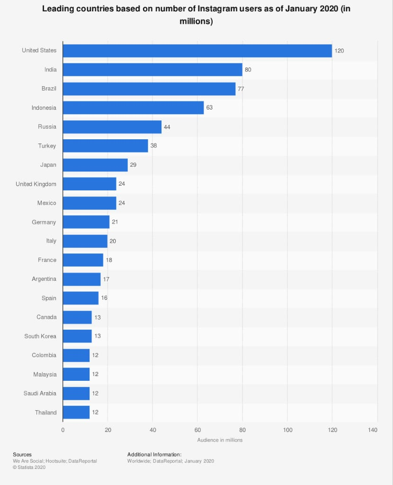

As you plan your 2020 Instagram marketing strategy, you will definitely be looking into the different ways you can improve on your previous marketing strategy. But it is also important that you understand this social platform and how it works and the best way to do this is to know the common Instagram statistics.
Having a knowledge of the statistics that are specific to a social media platform is important for you to know what marketing strategy to use. The data will give you an idea of what is on the ground, and what you should expect in this year, 2020.
Data reveals that Instagram is one of the most popular social media platforms based on the number of active users on the platform. With up to 1 billion active users monthly, this platform is an important one for brand marketers.
These are some Instagram stats based on:
- Instagram usage stats
- Instagram user stats
- Instagram features stats
- Brand’s use of Instagram
- Content trends
Instagram Usage Stats
The usage statistics of Instagram will give you a clue about how Instagram users use this platform, the actions that they take and how to create your marketing funnel.
1. Active users
Instagram has more than 1 billion active users monthly. It was in June 2018, when this platform first passed the benchmark of 1 billion active users monthly. The number has continued to increase gently since then. By 2023, it is estimated that the US will have active users up to 125.5 million per month.
2. Regularity of use
Instagram is the social media platform that has most log in after Facebook. More than 60% of Instagram users check the platform at least one time daily. 21% of Instagram users check the platform weekly and only 16% of users log in less frequently.
3. Time users spend on Instagram
If you are looking to determine the level of engagement of a social media platform, this is your best bet. The amount of time that Instagram users spend on the platform is as much as users of Facebook do on the platform. While Facebook users spend an average of 58 minutes daily on the platform, Instagram users spend an average of 53 minutes daily on the network.
This implies that Instagram is a very engaging network and the users will be more open to brand contents.
4. Users with high followers
Instagram as a social network is used by hundreds of celebrities worldwide. Celebrities attract a large number of followers. So, it is not surprising that football superstar Cristiano Ronaldo has the highest number of Instagram followers with 196.7 million followers with Ariana Grande and Dwayne Johnson with 171.5 million each.
5. Instagram accounts
A study of Instagram accounts found that 29.9% of accounts on Instagram are not active, meaning that they post very few or no videos or photos in a period of 30 days. The study also found that 8% of Instagram accounts are not real accounts.
6. Instagram posts
More than 100 million Instagram posts are made every day. A research carried out in June 2016, showed that Instagram users worldwide made up to 95 million posts daily. Considering, that was 4 years ago, the figures are likely to have increased greatly today.
Instagram user statistics
7. Age
A report from Statista shows that Instagram is a social network that has predominantly younger people on it. The report shows that over 50% of Instagram users are less than 34 years of age. In the US, for example, teenagers use this social network more after Snapchat. The age group that uses Instagram the most is 18-24.
8. Gender
The gender slit on Instagram is quite even than on many other social networks. As you would expect, the females have a slightly higher population on Instagram with 51%, while the males follow closely with 49%.
9. Geography
The audience on Instagram is a global audience. This platform has users from every corner of the world. The fact that it is as old as 10 years contributes to this and the platform is becoming more influential globally.

The US has the highest number of users with 116 million, followed by India and Brazil with 73 and 72 million respectively. You can expect that a few years from now, the International market will be bigger offering better chances to the international brands and how they reach out to their clients and prospects.
Instagram Feature Stats
Instagram as a social platform is always looking for a means for its users to connect with their followers better and have introduced features such as Instagram stories and more recently, IGTV.
10. Insta stories
This feature was first used by Snapchat before Instagram adopted it as well and it has borne a lot of fruits already. It is now a very popular feature of the app with over 500 million users posting on their Instagram stories daily. That is multiple times more than Snapchat’s 190 million stories daily.
11. Shopping
This is a relatively new feature on Instagram that allows the users to purchase a product without having to leave the app. Users can now easily add a product to their shopping list and checkout on the app.
This is one feature of the app that is very useful for brands on this platform and will become even more important in the coming years. According to a survey, when users find a product on Instagram, up to 79% of them try to seek more information, 65% visited the brand’s website, and 46% of users ended up making a purchase.
Brands’ use of Instagram
Many people now see Instagram as the ideal eCommerce marketing platform, and they are not wrong to do so. With 90% of Instagram users following one or more business accounts, you have an idea of how effective this platform is for eCommerce and brands are not left behind in the action.
12. Influencer marketing
There are individuals (influencers) that now rely on this as their source of livelihood making influencer marketing a booming industry on its own. According to a survey of marketers, almost 90% of marketers think that Instagram is the most effective platform for influencer marketing. The industries that currently work with Instagram influencers most are luxury, sports, and beauty brands.
13. Advertising
Advertising on Instagram has continued to grow with brands opting for this platform to advertise themselves and their products and Facebook (the parent company) are reaping the gains. It is projected that by the year-end, revenues from Instagram ads will be 30% of the total ad revenue of the company.
Advertisers are finding it easy to spend on Instagram add because of higher engagements.
14. Taking a stand
It is now becoming commonplace for brands to take a position in political and social issues. Although it is a risky thing to do, it can also help the brand image to grow. According to a report, 70% of customers want the brand to take a position on social problems, with 66% of them believing that brands can create a change by taking a position on social networks.

Instagram content trends
If you are going to be successful in your Instagram marketing campaign, you need to know the average trends and engagement rates. This would inform your marketing decisions. You do not want to invest in putting pictures out when videos are getting more engagements.
15. Engagement rates
The median engagement rates on Instagram are 1.60%. Brands that have the highest rate of engagement are higher education, nonprofits and sporting outfits with 3.96%, 2.40%, and 2.40% respectively.
16. Engagement with brands
Instagram is a social network with the highest number of engagement with brands. Instagram users engage with brands, 84x more than the users of the twitter platform, 54x more than the users of the Pinterest platform and 10x more than the users of the Facebook platform.
17. Best time to post
A recent research was carried out on the best time to post on Instagram. The results showed that contents posted in the late morning into the early afternoon (between 9 am and 2 pm) get more engagement, especially on Wednesdays and Fridays.
18. Product purchase
More than one-third of users on the platform have purchased a product with their mobile device. So, they have a 70% likelihood of doing that than non-users.
Conclusion
All of these statistics about Instagram were compiled to give you an idea or what Instagram is about and how Instagram users relate or engage with themselves and with brands on this platform. Now you have an idea of what to prioritize as a brand on Instagram and what customers expect of you. With this wealth of information at your disposal, you can carefully plan your Instagram marketing campaign strategy.
About the author
 Scott Matthews is one of the most renowned dissertation writers at college paper help. He also writes blog posts and is one of the popular paper writers at many online platforms. He loves to read, and when he is not writing, he is behind a pile of books. He also spends his leisure time traveling and meeting new people.
Scott Matthews is one of the most renowned dissertation writers at college paper help. He also writes blog posts and is one of the popular paper writers at many online platforms. He loves to read, and when he is not writing, he is behind a pile of books. He also spends his leisure time traveling and meeting new people.
Neil Richards says
Very useful information. Thanks for sharing. Keep it up.
Elaina M says
You’re welcome, glad you find it useful. Keep on browsing through our blog and you’ll find more of this, cheers!
word counter says
it’s awesome!